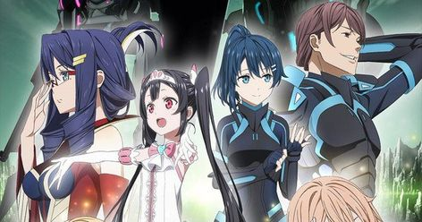
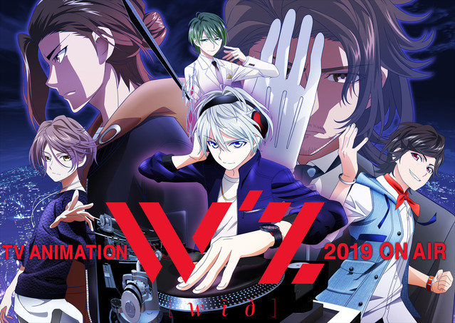
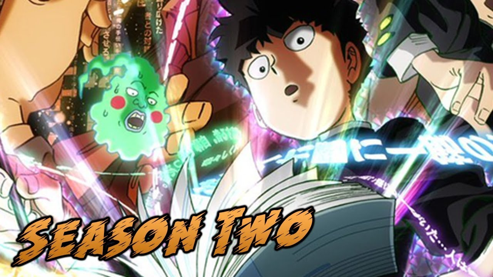
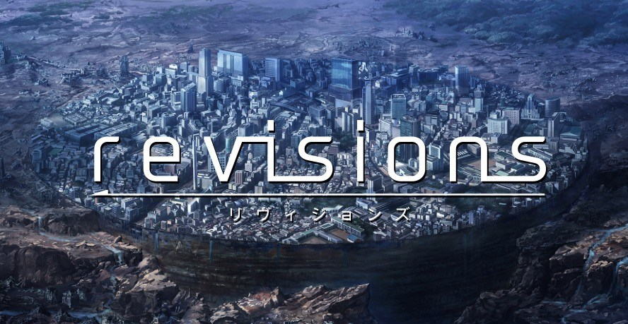
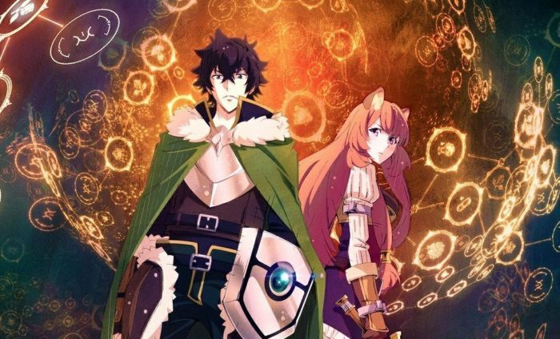

The Promised Neverland (TV)
Alternative title:
Yakusoku no Neverland (Japanese)
約束のネバーランド (Japanese)
Plot Summary: Emma, Norman and Ray are the brightest kids at the Grace Field House orphanage. And under the care of the woman they refer to as “Mom,” all the kids have enjoyed a comfortable life. Good food, clean clothes and the perfect environment to learn. One day, though, Emma and Norman uncover the dark truth of the outside world they are forbidden from seeing.
Click here for more info...
|
The Price of Smiles (TV)
Alternative title:
Egao no Daika (Japanese)
エガオノダイカ (Japanese)
Plot Summary: On a planet far from Earth, there is a kingdom full of smiling faces. Princess Yūki is 12 years old, and about to enter a sensitive age in a person's life. Everyday, she cries, laughs, and sometimes, her heart throbs with excitement. All the while, she lives merrily in the royal palace. Filling her days with color are her loyal vassals: her tutor Reira, Izana who assists in political affairs, the leader of the chivalry Harold and then, there is her childhood friend and aide Joshua. Stella is 17 years old and a capable, reserved soldier. However, she is always smiling for smiling is essential to living.
Click here for more info...
|
W'z (TV)
Alternative title:
ウィズ (Japanese)
Plot Summary: Yukiya is about 14 years old. He spends his time DJ-ing alone. Due to his father's influence, he's listened to house music since he was young, and he uploads videos online. He wants to convey something to someone. He wants to be recognized, and become important. But getting hurt is scary. One day, while trying to get more views, he does something that can't be undone. And he sees a live broadcast from "that world." Yukiya believes he can't do anything alone, but that he could accomplish something if he were doing it together with someone else.
Click here for more info...
|
Mob Psycho II (Season 2)
Alternative title:
モブサイコ100 II (Japanese)
Plot Summary: This is the Second Season.
First Season Plot Summary: Eighth-grader Shigeo “Mob” Kageyama has tapped into his inner wellspring of psychic prowess at a young age. But the power quickly proves to be a liability when he realizes the potential danger in his skills. Choosing to suppress his power, Mob’s only present use for his ability is to impress his longtime crush, Tsubomi, who soon grows bored of the same tricks.
Click here for more info...
|
Revisions (TV)
Alternative title:
リヴィジョンズ (Japanese)
Plot Summary: Daisuke Dōjima is a second-year high school student and, along with his friends Gai, Lū, Marimari, and Keisaku, get wrapped up in the mysterious phenomenon known as the "Shibuya Drift." The central area of Shibuya rises up and is transported at least 300 years into the "future." What awaits them is a vast wasteland and forest dotted with ruins. There, they will work with the future people to operate giant mechanical monsters. Daisuke meets a girl named Melos. Melos informs Daisuke that he's the only one who can operate the "doll weapon String Puppet" and protect Shibuya. Daisuke and his friends must take back the present by fighting the future in a town of isolation, against an unknown enemy.
Click here for more info...
|
The Rising of The Shield Hero (TV)
Alternative title:
Tate no Yūsha no Nariagari (Japanese)
盾の勇者の成り上がり (Japanese)
Plot Summary:Naofumi Iwatani, an uncharismatic otaku who spends his days on games and manga, suddenly finds himself summoned to a parallel universe. He discovers he is one of four heroes equipped with legendary weapons and tasked with saving the world from its prophesied destruction. As the Shield Hero, the weakest of the heroes, all is not as it seems. Naofumi is soon alone, penniless, and betrayed. With no one to turn to, and nowhere to run, he is left with only his shield. Now, Naofumi must rise to become the legendary Shield Hero and save the world.
Click here for more info...
|
 ANIME CATALOGUE
ANIME CATALOGUE